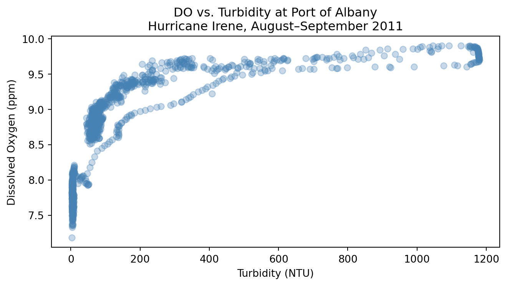
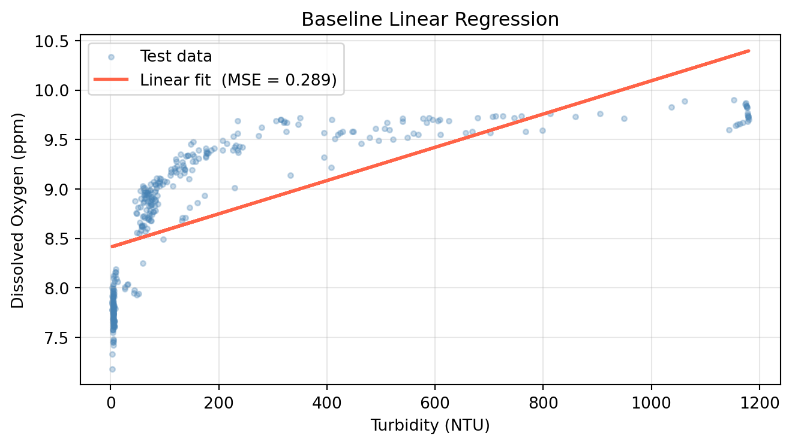

Download the lab template here and move to your eds232-labs repository.
Background
Turbidity measures how much light is blocked by suspended particles in water. During a major storm like a hurricane, wind and rainfall stir up sediment and carry organic material into rivers, causing turbidity levels to spike. When light is blocked, aquatic photosynthesis slows, which reduces dissolved oxygen (DO). The relationship between turbidity and DO is not linear; it curves and flattens at extreme values.
In this lab, we use 15-minute continuous sensor data from the Hudson River during Hurricane Irene (August 25 – September 5, 2011), collected by HRECOS. We will:
Fit a simple linear regression as a baseline and compute test MSE
Check if a polynomial regression is a better fit than linear regression
Use a for loop with cross-validation to find the polynomial degrees (from 1 to 10) that yields the best MSE
Select the best degree and evaluate it on the test set
Setup: Load Libraries and Read in Data
Code
import pandas as pdimport numpy as npimport matplotlib.pyplot as pltfrom sklearn.model_selection import train_test_split, cross_val_scorefrom sklearn.pipeline import Pipelinefrom sklearn.preprocessing import PolynomialFeaturesfrom sklearn.linear_model import LinearRegressionfrom sklearn.metrics import mean_squared_errorurl ="https://docs.google.com/spreadsheets/d/1MsSf679OsQpt4y6btV3tLPf-i8_bdoTZ/export?format=xlsx"hurricane_do = pd.read_excel(url, sheet_name=5)hurricane_turbidity = pd.read_excel(url, sheet_name=2)# Merge two sheets together and drop locations that aren't Albanydf = hurricane_do.merge(hurricane_turbidity, on='Date Time (ET)').drop( ['Piermont D.O. (ppm)', 'Piermont Turbidity in NTU', 'Norrie Point Turbidity in NTU','Norrie Point D.O. (ppm)'], axis=1)# Rename columnsdf.columns = ['date', 'albany_DO', 'albany_turbidity']print(f'Shape: {df.shape}')df.head()
Shape: (1152, 3)
date
albany_DO
albany_turbidity
0
2011-08-25 00:00:00
7.68
4.0
1
2011-08-25 00:15:00
7.60
3.9
2
2011-08-25 00:30:00
7.57
4.3
3
2011-08-25 00:45:00
7.72
4.7
4
2011-08-25 01:00:00
7.74
4.4
Step 1: Explore the Data
Plot dissolved oxygen against turbidity at Port of Albany to see whether the relationship looks linear or curved.
Code
# Create scatterplot of turbidity and dissolved oxygen relationship fig, ax = plt.subplots(figsize=(7, 4))ax.scatter(df['albany_turbidity'], df['albany_DO'], alpha=0.3, color='steelblue')ax.set_xlabel('Turbidity (NTU)')ax.set_ylabel('Dissolved Oxygen (ppm)')ax.set_title('DO vs. Turbidity at Port of Albany\nHurricane Irene, August–September 2011')plt.tight_layout()plt.show()

What do you notice? Does the relationship look linear? Does a linear regression line seem like a good fit?
Step 2: Prepare Features and Split Data
Build X from albany_turbidity (reshape to a 2D column vector with .reshape(-1, 1)) and y from albany_DO.
Split into 70% train / 30% test using train_test_split with random_state=42.
Code
# Define predictor and response variableX = df[['albany_turbidity']]y = df['albany_DO']# Split data into training and testingX_train, X_test, y_train, y_test = train_test_split( X, y, test_size=0.30, random_state=42)print(f'Training observations : {len(X_train)}')print(f'Test observations : {len(X_test)}')
Training observations : 806
Test observations : 346
Step 3: Fit a Baseline Linear Regression
Fit a degree-1 polynomial (linear regression) and record its test MSE. This is our baseline.
Initialize a LinearRegression model and fit it on X_train / y_train.
Predict on X_test and compute test MSE.
Plot the fitted line over the test scatter.
Code
# Run Linear Regression (polynomial with degree = 1)lr = LinearRegression()lr.fit(X_train, y_train)y_pred_lr = lr.predict(X_test)mse_linear = mean_squared_error(y_test, y_pred_lr)print(f'Linear regression test MSE: {mse_linear:.4f}')fig, ax = plt.subplots(figsize=(7, 4))ax.scatter(X_test, y_test, alpha=0.3, s=10, color='steelblue', label='Test data')ax.plot(X_test, y_pred_lr, color='tomato', linewidth=2, label=f'Linear fit (MSE = {mse_linear:.3f})')ax.set_xlabel('Turbidity (NTU)')ax.set_ylabel('Dissolved Oxygen (ppm)')ax.set_title('Baseline Linear Regression')ax.legend()ax.grid(True, alpha=0.3)plt.tight_layout()plt.show()
Linear regression test MSE: 0.2895

Polynomial Regression
Linear regression assumes a straight-line relationship between the response and predictor:
\[\hat{y} = \beta_0 + \beta_1 x\]
But in many real-world settings, that relationship is non-linear. Consider the plot above where the relationship between turbidity and dissolved oxygen follows a curve, not a line. A straight-line model will miss that relationship.
A simple way to handle this is polynomial regression: include transformed (higher-degree) versions of the predictor as additional features. For degree \(d\):
While this may appear non-linear, it is still a linear model. It is linear in the coefficients\(\beta_0, \beta_1, \ldots, \beta_d\). That means we can estimate all the coefficients using ordinary least squares, just as in multiple linear regression, where \(X_1 = x\), \(X_2 = x^2\), and so on.
Higher degree terms can often overfit, producing an unnecessarily wiggly curve that captures noise rather than signal. Cross Validation can help us find a degree that prevents overfitting.
In scikit-learn, PolynomialFeatures handles the feature transformation. Always fit it on the training set and use transform() on the test set — fitting on all the data would leak test information into the model.
Step 4: Fit a Degree-2 Polynomial
Use PolynomialFeatures(degree=2) to transform X_train and X_test
Fit a LinearRegression on the transformed training data
Compute and print the test MSE
Code
# Run 2 degree polynomial modelpoly = PolynomialFeatures(degree=2)X_train_poly = poly.fit_transform(X_train)X_test_poly = poly.transform(X_test)lr_poly = LinearRegression()lr_poly.fit(X_train_poly, y_train)y_pred_poly = lr_poly.predict(X_test_poly)# Compare 1 and 2 degree polynomial results mse_poly = mean_squared_error(y_test, y_pred_poly)print(f'Linear regression test MSE : {mse_linear:.4f}')print(f'Degree-2 polynomial test MSE: {mse_poly:.4f}')
Linear regression test MSE : 0.2895
Degree-2 polynomial test MSE: 0.1511
Step 5: Compare Polynomial Degrees with Cross-Validation
Picking the best degree by checking test MSE is an example of data leakage since we would be using the test set to choose the model. Instead, we use k-fold cross-validation on the training set to estimate the error for every degree. Recall the steps for the hyperparameter use case of cross validation:
Identify the hyperparameter you want to examine.
For each candidate value of the hyperparameter, compute the k-fold CV error on the training set.
Select the hyperparameter that resulted in the lowest CV error. If there are several candidates, opt for the one that gives the simpler model.
Refit the model using the selected hyperaparameter on the full training set.
Evaluate the final model once on the test set.
0. Identify the hyperparameter you want to examine.
We identify the hyperparamter we want to tune as the number of degrees used in our polynomial regression. We will iterate over 11 different polynomial degress and perform cross validation with each one to find the lowest MSE.
Note: cross_val_score with scoring='neg_mean_squared_error' returns negative MSE, so we negate the scores to get positive MSE values.
1. For each candidate value of the hyperparameter, compute the k-fold CV error on the training set.
2. Select the hyperparameter that resulted in the lowest CV error. If there are several candidates, opt for the one that gives the simpler model.
From the line plot above, we can see that the polynomial degree that yielded the lowest MSE was a degree of 5. We will use this degree for our test set.
Step 7: Evaluate the Best Degree on the Test Set
We will now address the last two step of our hyperparamter selection process with cross validation: Refit the model using the selected hyperaparameter on the full training set (Step 3) & Evaluate the final model once on the test set (Step 4).
Fit a final model on all training data using the CV-selected degree and evaluate it once on the test set.
Fit PolynomialFeatures(degree=optimal_degree) on X_train, transform both sets.
Fit LinearRegression on the transformed training data.
Compute test MSE and compare against the linear baseline.
Plot the fitted curve over the test scatter.
Code
# Fit polynomial with degree that yielded lowest MSEpoly_best = PolynomialFeatures(degree=optimal_degree)X_train_p = poly_best.fit_transform(X_train)X_test_p = poly_best.transform(X_test)model_best = LinearRegression()model_best.fit(X_train_p, y_train)y_pred_best = model_best.predict(X_test_p)mse_best = mean_squared_error(y_test, y_pred_best)print(f'Linear regression test MSE : {mse_linear:.4f}')print(f'Degree-{optimal_degree} polynomial test MSE : {mse_best:.4f}')X_range = pd.DataFrame( np.linspace(X_test.min(), X_test.max(), 300), columns=['albany_turbidity'])y_range_pred = model_best.predict(poly_best.transform(X_range))# Visualize results of final model evaluated on test setfig, ax = plt.subplots(figsize=(7, 4))ax.scatter(X_test, y_test, alpha=0.3, s=10, color='steelblue', label='Test data')ax.plot(X_range, y_range_pred, color='tomato', linewidth=2, label=f'Degree-{optimal_degree} fit (MSE = {mse_best:.3f})')ax.set_xlabel('Turbidity (NTU)')ax.set_ylabel('Dissolved Oxygen (ppm)')ax.set_title(f'Best Polynomial Regression (Degree {optimal_degree})')ax.legend()ax.grid(True, alpha=0.3)plt.tight_layout()plt.show()
Linear regression test MSE : 0.2895
Degree-5 polynomial test MSE : 0.0319